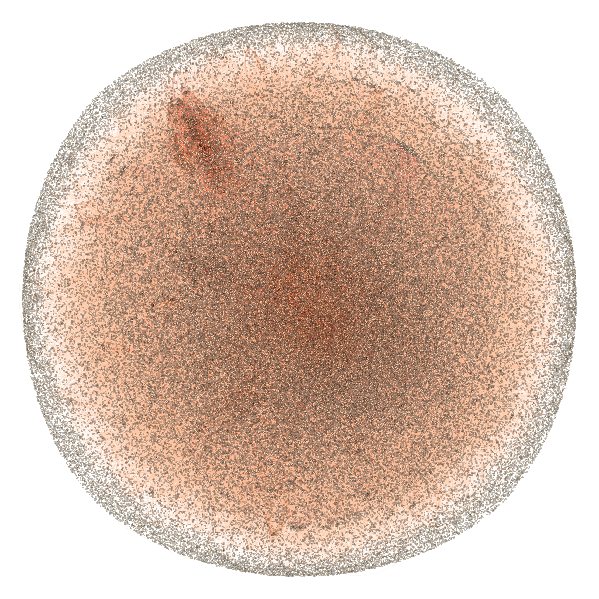

Programming Experience
Create a twitterbot with Scala and Akka
Created by Robert van Rijn
What are we going to do?
Message passing

1/2 Libraries we will use:
Twitter4J is an unofficial Java library for the Twitter API. With Twitter4J, you can easily integrate your Java application with the Twitter service.
2/2 Libraries we will use:
ROME is a set of RSS and Atom Utilities for Java that is open source under the Apache 2.0 license.

The toolkit we will use:
- actors
- akka-remoting

The project files contain three sbt subprojects
- Examples
- Client
- Server
Open the Examples project
- Get RSS feed
- Shorten the url
Have a look at the other sbt projects
- Server
- Client
Server application.conf
akka {
//loglevel = "DEBUG"
actor {
provider = "akka.remote.RemoteActorRefProvider"
}
remote {
transport = "akka.remote.netty.NettyRemoteTransport"
//log-sent-messages = on
//log-received-messages = on
netty {
hostname = "SERVER.IP.ADDRESS"
port = 5150
}
}
}
Spark MLlib
- Machine Learning Basics
- Programming Abstractions in Spark MLlib
- Example: Predicting Digits
- Getting YOUR hands dirty
Spark MLlib — Machine Learning Basics

Gather and prepare data
"In Data Science, 80% of time is spent on data preparation, and the other 20% is spent on complaining about the need to prepare data"
Select features
"In machine learning and statistics, feature selection, also known as variable selection, attribute selection or variable subset selection, is the process of selecting a subset of relevant features (variables, predictors) for use in model construction"
- Current age for predicting the probability of ending up in hospital in the coming five years.
- $\frac{\text{weight}}{\text{length}^2}$ for predicting percentage of body fat.
- You fall in category $A$, so you are very likely to do $Z$.
Train a model


Select the best model
- Train model with different parameters.
- Model might be too complex, or too simple.
- Evaluate model on some validation set and use cross-validation to find an appropriate model.

Predict

Spark MLlib — Programming Abstractions
- (Dense/Sparse) Vector
- LabeledPoint
- Matrix
- Rating
- Model classes
- Pipeline API
(Dense/Sparse) Vector
- A mathematical vector containing numbers.
- Both dense and sparse vectors.
- Constructed via the
mllib.linalg.Vectorsclass. - Do not provide arithmetic operations.
val denseVec1 = Vectors.dense(1.0, 2.0, 3.0)
val denseVec2 = Vectors.dense(Array(1.0,2.0,3.0))
val sparseVec = Vectors.sparse(4, Array(0,2), Array(1.0, 2.0))LabeledPoint
"LabeledPoint: A labeled data point for supervised learning algorithms such as classification and regression. Includes a feature vector and a label."
val lp = LabeledPoint(1,Vectors.dense(3.14,1.68,1.41))Matrix
- Integer typed row and column indices
- Double values
- Different implementations for distribution purposes (RowMatrix, BlockMatrix, CoordinateMatrix,...).
- Dense and sparse variants

Rating
"Rating: A rating of a product by a user, used in the mllib.recommendation package for product recommendation."Nothing more than a
case class Rating(user: Long, item: Long, rating: Double)Model classes
- Work on RDD[Vector], RDD[LabeledPoint], etc.
- Often follow naming pattern: <problem>With<Algorithm>, e.g. LinearRegresionWithSGD.
- Either the model follows a builder pattern and has a run() method, or it has static train() and predict() methods:
val points: RDD[LabeledPoint] = // ...
val lr = new LinearRegressionWithSGD()
.setNumIterations(200)
.setIntercept(true)
val model = lr.run(points)val model = DecisionTree.trainClassifier(
input = data,
numClasses = 10,
categoricalFeaturesInfo = Map[Int, Int](),
impurity = "gini",
maxDepth = 15,
maxBins = 5
)Pipeline API
- Advanced API for chaining machine learning operations in one workflow
- Uses the more advanced DataFrame features compared to RDD's of simple MLlib abstractions.
- Possible pipeline: Automated feature selection -> Model training -> Validation -> Model selection -> Prediction
Spark MLlib — Example: Predicting Digits
- 42,000 drawings of digits.
- Given a drawing, predict the written digit.
- Classification problem.
- Use Decision Tree approach.


CODE TIME
Spark MLlib — Getting YOUR hands dirty
nl.ncim.workshop.streaming
Client application.conf
akka {
//loglevel = "DEBUG"
actor {
provider = "akka.remote.RemoteActorRefProvider"
}
remote {
transport = "akka.remote.netty.NettyRemoteTransport"
//log-sent-messages = on
//log-received-messages = on
netty {
hostname = "YOUR.IP.ADDRESS"
port = 0
}
}
}
How do I create a Actor system?
val system = ActorSystem("LocalSystem")
val localActor = system.actorOf(Props[LocalActor], name = "LocalActor")
How do I get the Akka remote server address?
val remote = context.actorSelection("akka://HelloRemoteSystem@SERVER.IP.ADDRESS:5150/user/RemoteActor")
How do I deal with incoming messages
def receive = {
case "START" =>
remote ! "Hello from the LocalActor"
case msg: String =>
println(s"LocalActor received message: '$msg'")
if (counter < 5) {
sender ! "Hello back to you"
counter += 1
}
}
Spark GraphX — Example: Maven Dependencies
Data
- Directed graph of maven dependencies.
- Data structure:

Code Time
Open de client project and write some code to talk to the server.